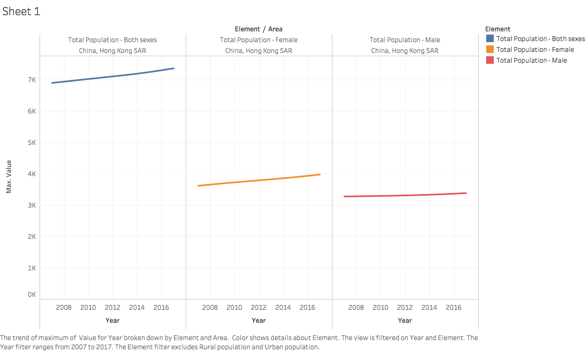
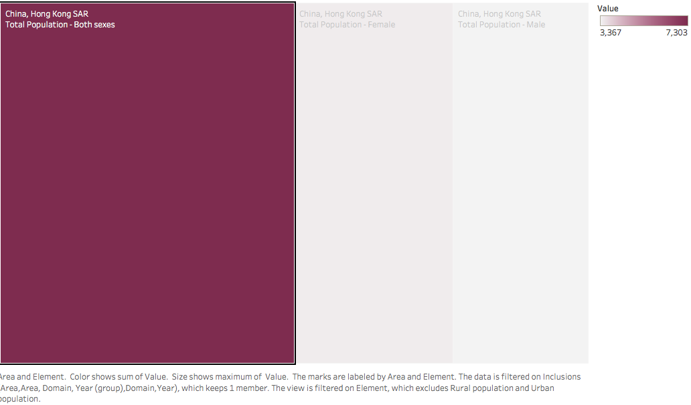
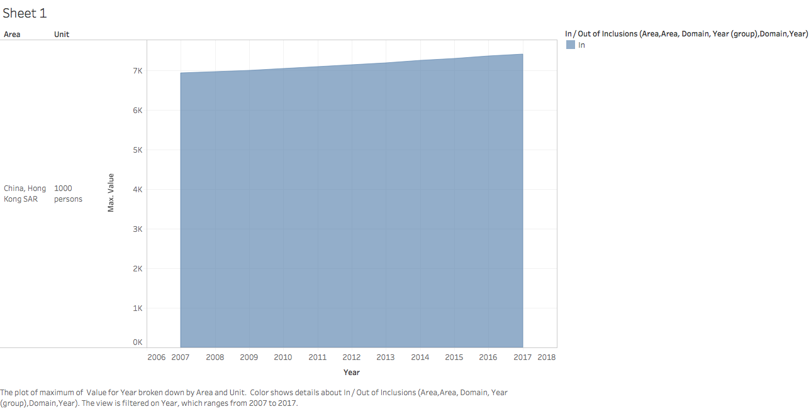

Date: 2nd, March, 2018
08:02:30
Reporter: Janice, Chan Sui Ping
Gender Imbalance worsened. The sex ratio in Hong Kong was enlarged, according to Hong Kong population index,published by Food and Agriculture Organization of the United Nations. At the same time, the total population in Hong Kong rised correspondingly, to 734 million in the latest report.
Female population has a higher rising rate.
Female population takes a larger place
The rising rate was enlarged year by year. There was 3.62 millions of female population in 2007, and it has been rised to 3.98 millions in 2017, increased 10% of within 10 years. On the other hand, the rising rate is slower in male population. There was 3.26 millions of male in 2007, it is rised th 3.39 millions in 2017, increased 4% within the years. The gender imbalance was enlarged.
Total population grew steadily
Total population rate kept rising in Hong Kong. In 2007, the population rate was 6.89 millons. It rised to 7.34 millions to 7.34 millions in 2017. Total population rised 6.5%.